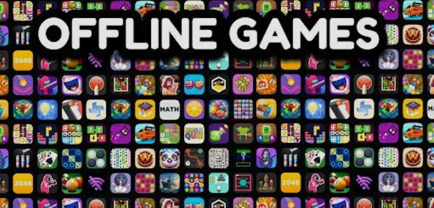

Not every game requires an internet connection. Offline Android games are perfect for travelling, long journeys, or places where internet access is limited. In this article, we have selected ten of the best offline Android games that provide hours of entertainment without Wi-Fi or mobile data.
An exciting fighting game with smooth controls, powerful weapons, and challenging enemies.
A relaxing endless runner featuring beautiful graphics and enjoyable gameplay.
Create amazing worlds, gather resources, and build anything you imagine without internet.
Run, dodge trains, collect coins, and unlock exciting characters in this classic endless runner.
Drive across challenging hills, unlock vehicles, and improve your driving skills.
An action-packed offline shooting game with realistic graphics and engaging missions.
Experience high-speed racing with stunning cars and exciting tracks.
Protect your garden using powerful plants against waves of funny zombies.
A fun arcade game where players cross busy roads while avoiding obstacles.
An award-winning adventure game with unique physics-based gameplay and beautiful visuals.
Offline Android games are a great choice for gamers who want uninterrupted entertainment. Whether you enjoy racing, action, adventure, or casual games, these titles offer excellent gameplay without requiring an internet connection.